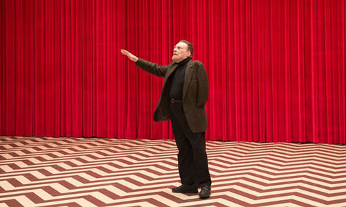
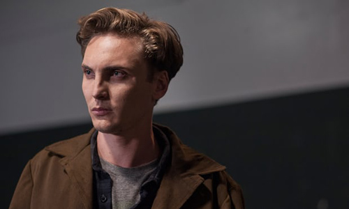
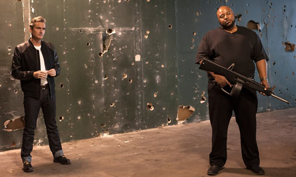
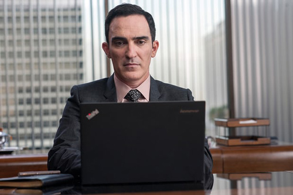
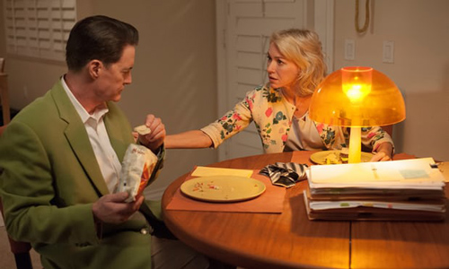
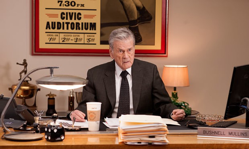
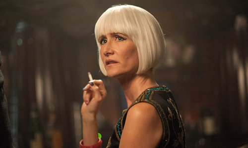

Magic coins, big reveals – and a beloved character finally makes an appearance.

"We're living in dark, dark times," Naomi Watts's character Janey-E told the cheap Vegas loan sharks she confronted this week, "and you're part of the problem." This week's episode teemed with people who were part of the problem – not just the low-rent hoodlums to whom her husband Dougie Jones owed over $50,000, but a hired killer called Ike "the Spike" Stadtler who seemed to really enjoy his work, and the force of darkness that is Richard Horne, who killed a small boy at a crossing without compunction. Let's start with the last of the three.

We met Horne at the end of last week's episode, smoking under a no smoking sign at Twin Peaks' Bang Bang Bar and making unpleasant overtures to a woman at the next booth ("I'm gonna laugh when I fuck you, bitch.") This week, coked out of his gourd, he met a gang of toughs from Canada, for whom he seemed to be plotting some kind of criminal shakedown in the little town. They were led by Red, played by Balthazar Getty, who busted some intimidating karate moves before Horne and then, for his party piece, flipped a coin in the air. It hovered, mystically, mid-air then appeared in Horne's mouth, before reappearing in Red's hand. Horne, who may well be the son of Sherilyn Fenn's Audrey Horne (the teen beauty we last saw a quarter of a century ago), was out of his depth with these sinister Canadians. "Don't call me kid," Horne told Red. "Just remember this, kid," Red retorted sarcastically, "I will saw your head open and eat your brains if you fuck me over." A useful life lesson for the badass Horne: there's always someone more badass than you. One question: if he is Audrey's son, who's the father? Probably somebody really evil, judging how he turned out.

Cut to Horne barrelling down a blacktop in his Ford truck, furious at his humiliation by Red and, worse yet, amped up on cocaine. In town, he crossed into the wrong lane to skip a traffic jam and ran down a little boy crossing the street. A few miles out of town, he stopped to wipe the boy's blood off the radiator grille.
We hope – don't we? – Horne gets his comeuppance. And our best hope for that seems to be the teacher who, after eating two slices of cherry pie at the RR2Go and taking two coffees to go, saw Horne as he drove off. The rest of the town was standing mortified at the scene of the accident in one of the moments of community grief that Lynch does so well. Just as in the first episode of Twin Peaks, when the small town was devastated by Laura Palmer's murder, here onlookers stood crying as the mother cradled her dead son. And then Harry Dean Stanton, playing Carl Rodd, the time-ruined manager of the Fat Trout Trailer Park (a job he held way back in 1992 in Fire Walk With Me), kneeled at her side. He'd been smoking in the park a few minutes earlier when he saw the boy and his mom laughingly play tag. Now, just before he kneeled beside them, he saw a feathery yellow flame rise from the boy and ascend heavenwards.

An envelope appeared under the door of Ike "the Spike" Stadtler's hotel room. It contained two photos – one of a woman he later stabbed to death in her office (along with a few co-workers who got in his way), and the other of Dougie Jones. Presumably, then, the next person on Ike's kill list is Dougie. Who's hiring "the Spike" to do the work and why is not clear, but possibly the person responsible for the commission is the shifty enigma that is Duncan Todd (played by Patrick Fischler) who we saw in episode two commissioning a hit from his Vegas office.
In this episode, we saw Todd in the same office working at his laptop. A red square appeared on screen, prompting him to go to his safe and pull out a piece of white paper with a black dot on it. Whether red square and black dot are secret signs impelling Todd to do something – hire Ike to whack some unfortunates, or buy milk on the way home – is uncertain.
What is certain is that, if you're thinking of calling your newborn son Ike, you may want to reconsider. Ike Turner? Ike "the Spike"? Not role models in my book.
The mystic force of such gnomic signs as the ones Todd studied and Carl saw floating to the clouds figured prominently in this episode, as character after character read apparent hieroglyphs and found in them information denied to plodders through the forest of Lynchian symbols like me. Even Dougie Jones' boss at Lucky Seven Insurance, Bushnell Mullins, could decode the seemingly inscrutable, as we will see.

Early in the episode, Dougie was at home, trying to work his way through case files for his boss. There was a problem. Ever since Dougie was replaced by an aspect of the spirit of the good FBI agent Dale Cooper earlier in the season, "Dougie" has been struggling with the real world. He comes across as an idiot savant – one who doesn't have the wit to relieve himself in the bathroom, but who also has visions, such as the hovering symbols above the one-arm bandits at a Vegas casino that made him $400 grand richer. But, as for doing ordinary work, that seemed beyond him: he squiggled ladders and steps on the insurance claim forms and it looked like, when he showed his work to Mullins, he would be for the chop.

"What the hell are all these childish squiggles," asked Mullins. And then he looked again, and saw in them significance denied to me. Probably, I'm guessing, what Mullins saw there doesn't mean good news for Dougie's colleague who Dougie/Cooper called a liar and who we suspect of rigging insurance claims presumably to make money on the side.
In the bathroom of Twin Peaks PD, Deputy Chief Tommy "Hawk" Hill dropped a coin from his pocket. The coin rolled into a cubicle where he picked it up and found that it had a Native American's profile and one that, moreover, echoed the sign on the stall door "Nez Perce Manufacturing" – the Nez Perce is a Native American tribe from the Pacific Northwest. As we know from previous episodes, Hawk believes he will find out more about Laura Palmer's murder through something connected with his native past. At least that's what Twin Peaks' leading seer, the Log Lady, told him, and he believed her. To Hawk, these two symbols suggested the mystic confluence of something in that very cubicle. Inspired, Hawk prised a panel off the stall door and found secreted inside letters that may well be from Laura Palmer's diary.
Perhaps, and this is just a theory, in Lynchland visionaries and those who can decode such inscrutable messages are those who, in the Manichean struggle between good and evil in the dark dark times evoked by Janey-E, are the ones on whom we must rely to lead us into the light. They are akin to the men in white hats in cowboy movies. Or something like that.

Meanwhile in Buckhorn, South Dakota, FBI agent Albert Rosenfield was not singing in the rain. "Fuck Gene Kelly you motherfucker," he said, stepping through driving rain into a bar. At the bar, there was her back to us. "Diane?" he asked, and the woman turned. It was Laura Dern, longtime performer in David Lynch's work who here plays the hitherto unseen FBI woman to whom agent Cooper has been dictating his reports all these years. Apart from working that grey bob with aplomb, what is she doing in town? Just possibly, Diane's the woman who's going to heal agent Cooper. Hopefully, she'll turn him from the man currently painfully split into two personalities – one a spirit inhabiting Dougie Jones, the other a troubled soul cooling his heels in a police cell – into the guy we loved all those years ago: the genial fan of cherry pie and damn fine coffee.